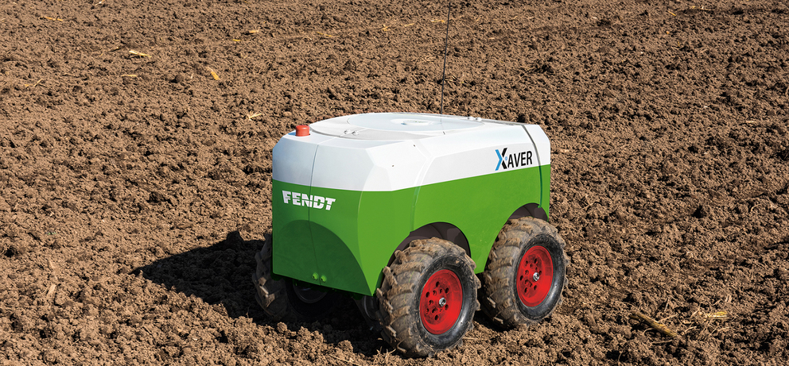

Smart Farming
Smart farming is about using the new technologies which have arisen at the dawn of the Fourth Industrial Revolution in the areas of agriculture and cattle production to increase production quantity and quality, by making maximum use of resources and minimising the environmental impact. Also, the implementation of technology in agriculture and cattle production will make it possible to boost food security throughout the world. The world has come to the conclusion that technology will drive the pace that’s required to keep up with the food demand of such a huge population. Climate Smart Precision Agriculture solution is that technology. Smart Farming IoT Solutions Or Smart Agriculture in short. IoT will play a key role in this, wherewith the help of sensors and data analytics, farmers will gain the priceless data of what the ever-changing climate will bring and will have in hand actionable insights, together with automated irrigation & fertilizer schedule that will push them towards achieving optimal growth from their farms for AI-powered maximum return on investment.
Autonomous and Robotic Labour

Replacing human labor with automation is a growing trend across multiple industries, and agriculture is no exception. Most aspects of farming are exceptionally labor - intensive, with much of that labor comprised of repetitive and standardized tasks - an ideal niche for robotics and automation.We’re already seeing agricultural robots - or AgBots - beginning to appear on farms and performing tasks ranging from planting and watering, to harvesting and sorting. Eventually, this new wave of smart equipment will make it possible to produce more and higher quality food with less manpower. Driverless Tractors The tractor is the heart of a farm, used for many different tasks depending on the type of farm and the configuration of its ancillary equipment. Humans will also still be required for regular repair and maintenance. All of these technological advancements will significantly diminish the need for humans to actively control these machines.
Seeding And Planting

Sowing seeds was once a laborious manual process. Modern agriculture improved on that with seeding machines, which can cover more ground much faster than a human. However, these often use a scatter method that can be inaccurate and wasteful when seeds fall outside of the optimal location. Effective seeding requires control over two variables: planting seeds at the correct depth, and spacing plants at the appropriate distance apart to allow for optimal growth.Precision seeding equipment is designed to maximize these variables every time. Combining geomapping and sensor data detailing soil quality, density, moisture and nutrient levels takes a lot of the guesswork out of the seeding process. Seeds have the best chance to sprout and grow and the overall crop will have a greater harvest. Developing technology capable of delicate harvest work, like picking fruit from trees or vegetables such as tomatoes, is where high-tech farms will really shine. Engineers are working to create the right robotic components for these sophisticated tasks, such as Panasonic’s tomato-picking robot which incorporates sophisticated cameras and algorithms to identify a tomato’s color, shape and location to determine its ripeness. This robot picks tomatoes by the stem to avoid bruising. Another prototype for fruit picking is the vacuum-powered apple picking robot. Robotics, which uses computer vision to locate apples on the tree and determine if they are ready to harvest. These are only a few of the dozens of up-and-coming robotic designs that will soon take over harvesting labour.
Once again, with the backbone of a robust IoT system, these agbots could continuously patrol fields, check on plants with their sensors and harvest ripe crops as appropriate. Reducing Labor, Increasing Yield and Efficiency. The core concept of incorporating autonomous robotics into agriculture remains the goal of reducing reliance on manual labour, while increasing efficiency, product yield and quality. Unlike their forebears, whose time was mostly taken up by heavy labour, the farmers of the future will spend their time performing tasks such as repairing machinery, debugging robot coding, analyzing data and planning farm operations.As noted with all of these agbots, having a robust backbone of sensors and IoT built into the farm’s infrastructure is essential. The key to a truly “smart” farm relies on the ability of all the machines and sensors being able to communicate with each other and with the farmer, even as they operate autonomously.
Drone For Imaging, Planting And More


DroneSeed and BioCarbon are two such companies, both of which are developing drones that can carry a module that fires tree seeds into the ground at optimal locations. All agriculture activities like poughing, seeding, watering, harvesting are done by drone, robot and automatic machines. Drones are being used to improve several agricultural practices in Smart Farming Using IoT. There are two types of agricultural drones, the surface-based and aerial-based. The drones are used for activities such as assessment of crop health, spraying of crops, planting, soil and field analysis, crop monitoring, and
irrigation. Drones can collect multispectral, thermal and visual imagery data that provide the farmers with a wide array of metrics such as plant health, plant count and expected yield, soil nitrogen and moisture content, drainage mapping, and canopy cover mapping. The data helps the farmer make the right decisions and use only the required resources to avoid wastage.
Aerial drones cover more land than a ground-based human observer in the same amount of time as it has the ability to avoid barriers. Automating drones to carry out routine assessments eliminates the need for human operation. The drones are deployed to cover large tracts of land where regular monitoring is required. Also, drones are very useful in situations where bacteria, fungus, or pests are difficult to control and require regular spraying and monitoring.
Crop Spraying
There are also drones currently available and in development for crop spraying applications, offering the chance to automate yet another labor-intensive task. Using a combination of GPS, laser measurement and ultrasonic positioning, crop-spraying drones can adapt to altitude and location easily, adjusting for variables such as wind speed, topography and geography. This enables the drones to perform crop spraying tasks more efficiently, and with greater accuracy and less waste. For example, DJI offers a drone called Agras MG-1 designed specifically for agricultural crop spraying, with a tank capacity of 2.6 gallons (10 liters) of liquid pesticide, herbicide or fertilizer, and a flight range of seven to ten acres per hour. The Connected Farm: Sensors and the IoT Sensors set up across the fields will collect data on light levels, soil conditions, irrigation, air quality and weather. That data will go back to the farmer, or directly to AgBots in the field. Teams of robots will traverse the fields and work autonomously to respond to the needs of crops, and perform weeding, watering, pruning and harvesting functions guided by their own collection of sensors, navigation and crop data. Drones will tour the sky, getting the bird’s eye view of plant health and soil conditions, or generating maps that will guide the robots, and help the human farmers to plan for the farm’s next steps. All of this will help create higher crop production, and an increased availability and quality of food.
Precision farming is the most famous application of smart farming using IoT. Precision farming is the practice of making agricultural processes more accurate and controlled for crop growing. The main components of precision farming are the IT systems, sensors, control systems, automated hardware, and autonomous vehicles, among others. IoT introduces the idea of connecting these systems and devices using the internet for better data storage and analytics. IoT improves services such as soil moisture probes, inventory monitoring, and tracking of vehicles, among others. Precision farming involves the collection of data through sensors and analyzing it for use by farmers to make informed and quick decisions.
Smart Greenhouse

Traditional greenhouses relied on manual interventions to control environmental parameters for the growth of crops. However, manual interventions have disadvantages such as energy loss and production loss. Smart greenhouse solves these issues by use of IoT systems by monitoring and controlling aspects such as temperatures, luminosity, soil and mineral content, and humidity. Using the collected data, optimal plant growth conditions can be maintained to ensure maximum production. The actuators are controlled automatically to control the conditions by performing actions like opening a window, turning on the lights, and controlling the heater and fan, among others. Smart greenhouses also help in reducing wastage smart agriculture using IOT. By monitoring moisture content, the right amount of water can be used for irrigation and this prevents wastage, the same case applies to soil mineral content as the right minerals in the right amounts are used. This reduces wastage and maintains a balance that is best for crop growth.
Benefits of IoT Applications in Agriculture
Several benefits arise from the application of IoT in agriculture. IoT application leads to increase production in crops and livestock through creating the right environment, monitoring and controlling different aspects. Secondly, IoT helps in reducing the cost of production, especially in largescale farming. The IoT devices reduce the need for human interventions, thus reducing the number of employees on a farm. Additionally, the IoT application reduces the wastage of resources such as water, fertilizers, and machine spare parts. They ensure only the right amounts of water and minerals are added to the soil. Sensors on vehicles and agricultural machines aid in predictive maintenance to ensure timely repairs and only the faulty parts are replaced. Lastly, the application of IoT improves overall farm operational efficiencies by providing data that allows every process to run optimally.
Benefits Of Smart Farming
The application of the above technologies has a positive impact on agriculture . Let's take a look at some of these improvements:
Increased production : the optimisation of all the processes related to agriculture and increases production.
Water saving : weather forecasts and sensors that measure soil moisture mean watering only when necessary and for the right length of time.
Better quality : analysis of the quality of the produce obtained in relation to the strategies applied makes adjustments possible to increase subsequent production and quality
Reduced costs: automation of sowing, treatments and harvesting in the case of agriculture reduces the use of resources.
Pest detection : early detection of infestations in crops means that their impact on production can be minimised .
Better sustainability : saving resources like irrigation water and getting maximum benefit from the land reduce the impact on the environment.